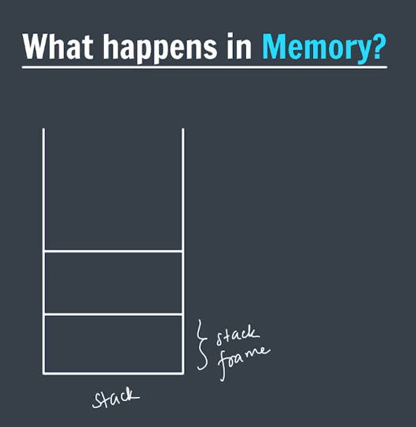

Function
What is the Function?
When our Program become to much lager that time we have to divide
Program into small paces it's called a "Function".
Function is small block of code which do a specific task when
it's called.
Syntax of the Function
return_type Name_of_function() {
//some Task
return some_value;
}
Explain the Syntax of the Function?
return_type : This is the return type
of the function Means
After the function is successfully executed which kind of data
it's return.
If the Function returning nothing then it's return type is
Void void means Nothing,empty.
void is Primitive Data type.
Name_of_function() { }: this is the name of the function . you can give any name to your
function but it's good practice to give meaning full name to your
function so you can easily identify which kind of task this function
do.
it's user define function.
User define function means a function which define my a
Programer.
():Parenthesis are the syntax part of the function .
{}:Curly Braces indicate the function block or scope. inside it's you
can define a task which perform by the function.
return some_value;: It's a last line of the function.when it's executed means
function task is successfully executed without any kind of the
error. it's return the some value.
void sayHello() {
cout << "Hello :)" << endl;
}
void assistance(){
sayHello();
cout << "work done" << endl;
}
int main () {
assistance();
return 0;
}
How it's Exactly work ?
Execution of the C++ Program it's always start from the
code main()function. When the
main() function call the another
function then compiler start execution of the that
calling function after successfully executing the
this calling function when it's return a value it's also return the
control to main() function then
compiler again start the execution of the
main ()function.
What are the Parameter?
Ans: A Parameter are the values which are require to execute a function task and function treat it's like a variable.
How to define the Parameter?
When you are declaring and defining the function that time inside a
parenthesis you can define parameter just like declaring variable.
parameter are nothing but variable which are declare inside a
function definition when you are declaring a function.
int sum(int a ,int b) { // variable a and b are parameter
int sum=a+b;
return sum;
}
int main () {
cout<<sum(4,5); //4 and 5 are Actual Arguments
return 0;
}
Difference Between Parameter and Arguments
| Parameter | Arguments |
|---|---|
| Parameter are the variable which are define inside function definition. | A actual values you pass when you are calling the function it's called Arguments |
| Parameter are different-different value. | Arguments are fixed values. |
| Parameter are the copy the value which are pass in argument. | it's actual values. passed when function is called. |
What is the "Default Parameter" ?
When you are calling the function if you are just pass only one parameter and function require two parameter to perform it's task and if you are want function can automatically identify the second parameter value by default when you just have to define the second parameter value at the declaration time of the function it;s called the "Default Parameter".
When you calling a function with parameter then first parameter value store in first parameter ,second parameter value store in second parameter end so on..
What happen in memory when you are calling a function ?

Ans:We all are know c++ program execution always start from the
main() function. step 1:main()
is a function so when the
main() function execution is start
then in stack memory one stack frame is created for a
main()function.
This Stack frame is totally allocated for only
main() function.
this Stack frame store the all the variable and data which are
require to execute a main() function.
step 2:When the main() function call a
another 1st calling function then
1st calling function execution is start then in
stack memory one stack frame is created.
This Stack frame is totally allocated for only
1st calling function.
This Stack frame store the all the variable and data which are
require to execute a 1st calling function.
step 3:When the main() function call a
another 1st calling function and
1st calling function call a another
2nd Calling function then
2nd calling function execution is start then in
stack memory one stack frame is created.
This Stack frame is totally allocated for only
2nd calling function.
This Stack frame store the all the variable and data which are
require to execute a 2nd calling function.
step 4:When the 2nd calling function is executed
successfully without any kind of the error it's return a value then
it's return the control back to
1st calling function . it's called
"Return Of The Control".
After returning the control to function where it's called from this
stack frame is deleted from the stack.
step 5:When the 1st calling function is executed
successfully without any kind of the error it's return a value then
it's return the control back to
1st calling function . it's called
"Return Of The Control".
After returning the control to main()function where it's called from this stack frame is deleted from
the stack.
step 6:When the Main() function is
executed successfully without any kind of the error.
then main() function stack frame is deleted from stack.
Note:
A function which on the top the stack it's executed currently.
What is Function Overloading?
Ans:
A Multiple function with a same name but different parameter it's
called function "overloading".
Function Overloading it's not depend on the function return type.
It's Differ From
1.different number of the parameter 2.different type of the
parameter
#include<iostream>
using namespace std;
int sum(int a , int b){
cout<"first 1 \n";
return a+b;
}
int sum(int a , int b ,int c){
cout<"second 2 \n";
return a+b+c;
}
double sum(double a , double b){
cout<"third 3\n";
return a+b;
}
double sum(int a , double b){
cout<"fourth 4 \n";
return a+b;
}
int main(){
cout<sum(1,3)<endl;//first sum call. ans :4
cout<sum(1,3,5)<endl;//second sum call. ans :9
cout<sum(1.5,3.5)<endl;//third sum call. ans :5
cout<sum(1,3.5)<endl;//fourth sum call. ans :4.5
}
What is a Scope?
Scope refers to the region of the program where a variable is accessible or can be used.
type of the scope :
1. Local Scope
2. Global Scope
What is a Local Scope?
Local Scope refers to the region of the program where a variable is accessible or can be used.
A variable which is declared inside a function or block it's called local variable and it's scope is only inside that function or block.
Example of the Local Scope
#include<iostream>
using namespace std;
void fun(){
int a=10; //local variable
cout<<a<<endl;
}
int main(){
fun();
cout<<a<<endl; //error: 'a' was not declared in this scope
}
2. Global Scope
Global Scope refers to the region of the program where a variable is accessible or can be used.
A variable which is declared outside of all functions or blocks it's called global variable and it's scope is throughout the program.
Example of the Global Scope
#include<iostream>
using namespace std;
int a=10; //global variable
void fun(){
cout<<a<<endl; //accessible
}
int main(){
fun();
cout<<a<<endl; //accessible
}